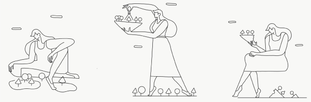

Enneagram 1w2 Weaknesses
Enneagram type 1 wing 2‘s weaknesses come from their
strengths.
When they feel overwhelmed by the world and don’t know where to
start, they get lost in disappointment with a touch of shame and
anger. They will usually overpressure themselves to achieve
particular goals. This can really affect their relationships as they
put a lot of effort into solving and changing things. However,
sometimes it’s best to just let life do what it does best: sort
things out. Although that’s something Enneagram type 1s love to do.
Losing sight of their beloved ones just to try to catch up with
their purposes makes them really unhappy and can push them into an
unhealthy cycle.
Enneagram 1w9: The Idealist
Enneagram 1w9 Strenght
The world needs idealists, and that’s their main strength.
They are essential. Whatever the career they’re in, they stand out
and broaden their field of action. They don’t take NO for an answer
when they know what needs to be done. In a healthy state, the
Enneagram type 1 wing 9 can shine and establish new paths and
perspectives. Their ideals and the conviction that lights their
fire, encourage them to share everything they know with others and
to express what they’ve seen so other people can be part of the
change. Instead of withdrawing, they make big decisions by taking
control of the boat, making it ready to sail into the horizon.
Enneagram 1w9 Weaknesses
Enneagram type 1 wing 9‘s weakness is seeing difficulties or
vulnerabilities as failures.
In bad times, they fall into the “impostor syndrome”, feeling they
aren’t good enough. The Idealist can get quite self-repressive. In
the same way they can be patient with other people’s mistakes and
setbacks, they won’t be patient with themselves. The bar for them is
always too high, which can make frustration take over. They knock on
heaven’s door, but on the other side there is nothing but a mirror
they should use to look at themselves, and start a new world with
self-love.

20
States of Growth - Enneagram 1 Wings